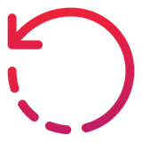
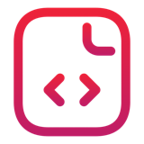

Cheat sheet · Context Engineering · développeurs · 1/2
Composer l'entrée du modèle
Un bon résultat vient moins d'un prompt magique que d'une context window bien composée.
 Quatre notions
Quatre notions
- Modèle probabiliste : il produit le token suivant le plus plausible, pas le plus vrai.
- Attention : chaque token présent pèse sur le suivant.
- Autorégression : sa sortie redevient son entrée.
- Context window : tout ce qu'il voit. Plus de bruit, moins d'attention.

Sentir le non-déterminismeRelancer 5 fois, changer 3 mots, ajouter un intrus : chercher les mots qui resserrent la sortie et ceux qui la contaminent.
✗ Empiler« Non, pas comme ça… » par-dessus le code faux
✓ Rewindcorriger l'entrée, relancer proprement

Formaliser : le trampolineIdée floue
›
Structure validée
›
Artefact
YAML, types, JSON Schema, OpenAPI : la structure relue devient le contexte du tour suivant. Le livrable est le prompt consolidé, testé dans une session vierge sur deux domaines.
 La context window d'un agentrenvoyée à chaque appel
La context window d'un agentrenvoyée à chaque appel
System prompt + tool definitions (et chaque MCP branché)
Instructions projet (
AGENTS.md) + skills chargéesConversation : messages, réponses, corrections
Tool calls + résultats : fichiers lus, sorties de commandes, logs
Quand la fenêtre est pleine, le harness compacte : vous ne choisissez pas ce qui reste.
 Plus n'est pas mieux
Plus n'est pas mieux
| Session | Effet |
|---|---|
| Simple | attention concentrée |
| Agentique | les résultats des tools dominent la demande |
| Polluée | sorties crédibles mais fausses (context rot) |
| Préparée | moins d'exploration à l'aveugle |
Ouvrir la context window
- Regarder : occupation du contexte, tool calls, fichiers lus.
- Demander : « Quels fichiers as-tu lus ? Sur quelle hypothèse ? »
- Élaguer : MCP inutiles, vieux objectifs, gros logs.
 5 réflexes pour lundi matin
5 réflexes pour lundi matin
- Relancer avant de croire qu'un prompt est robuste.
- Donner un exemple du format plutôt qu'un long paragraphe.
- Rewind dès que la session dérive.
- Écrire une carte de la tâche avant de lancer l'agent.
- Extraire les leçons d'une session avant de la jeter.